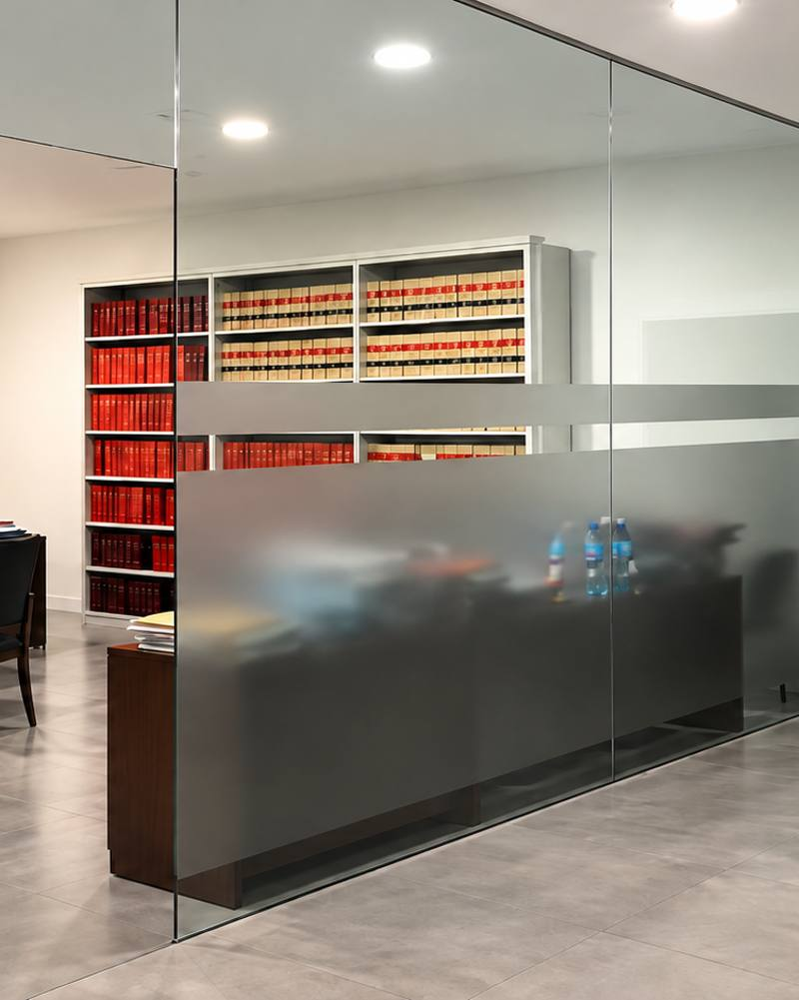

Gestoría José Bautista · Balanegra, Almería
Gestoría de extranjería y trámites administrativos en Balanegra
Te acompañamos en trámites de residencia, nacionalidad y otras gestiones ante la Administración, explicados con claridad y paso a paso.
Trámites en los que podemos ayudarte
Los trámites con la Administración tienen requisitos y plazos que pueden resultar difíciles de seguir. Revisamos tu situación, te indicamos la documentación necesaria y nos encargamos de la gestión.
- Solicitud y renovación de documentación de residencia.
- Trámites de nacionalidad.
- Gestión de cita previa y presentación de solicitudes.
- Empadronamiento y otras gestiones con la Administración.
- Certificados y otros documentos oficiales.
- Seguimiento de tus expedientes hasta su resolución.
Para quién es
Para personas y familias de Balanegra y del Poniente de Almería que necesitan realizar trámites con la Administración y quieren hacerlo con acompañamiento cercano.
Preguntas frecuentes
Dudas habituales sobre extranjería
¿Podéis ayudarme a conseguir cita previa?
Te ayudamos a gestionarla, aunque la disponibilidad de citas depende de la Administración.
¿Qué documentación suele hacer falta?
Depende del trámite. Normalmente se pide documento de identidad o pasaporte, justificantes de residencia y otros documentos específicos. En tu consulta te damos la lista exacta.
¿Cuánto tarda un trámite de extranjería?
Depende del tipo de trámite y de la Administración. En tu consulta te damos una idea realista de los tiempos.
Más servicios